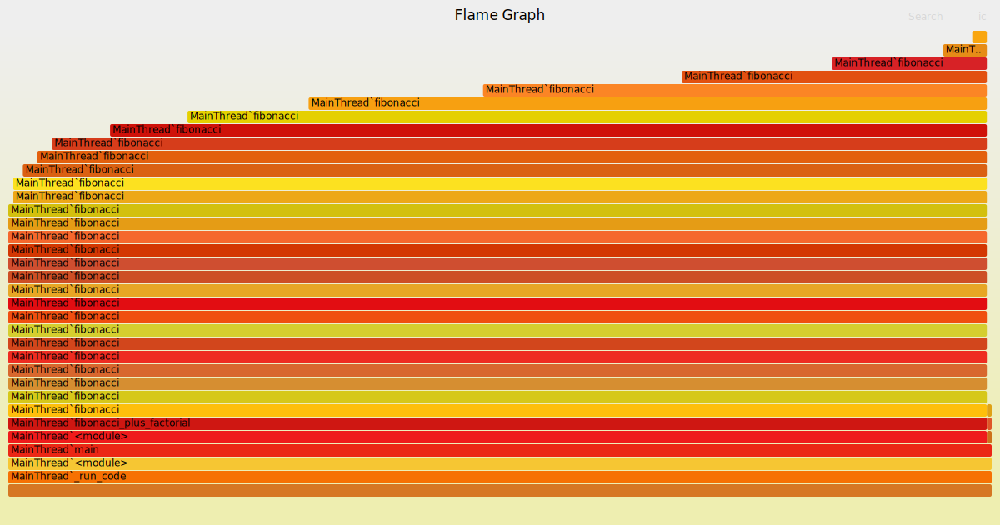

Hey there!
Today I bring a practical example of how we can analyze our Python programs to efficiently find bottlenecks.
There's a lot of talk on how optimizations shouldn't be done blindly. That instead one should measure which parts of a program are problematic to improve the code execution in an efficient way. Today we will see how to do that in a practical way.
Flame Graphs
There are lots of ways to measure and visualize the behavior of a program. Personally the one I find most useful is the representation known as Flame Graphs, described by Brendan Gregg. It works by measuring the time spent on executing a function stack and drawing it by stacking the functions that call each other in such a way that a the horizontal space taken by a function is proportional to the amount of time spent executing it.
 [Click here to see the image in an interactive way]​
[Click here to see the image in an interactive way]​
It's quite interesting as a way to explore the execution of a program as you can "zoom" interactively in the image itself. Try to open the image by following the link above and press on mysqld`mysql_parse. You can see it will expand that function to take all the horizontal space so you can better find the time it takes to run each function that is called by it.
Also by hovering the cursor over a function, like mysqld`mysql_exec, we can see the fraction of time of the program spent executing these function, in this case 83.77%.

Getting the data
OK, now that we know how to use Flame Graphs let's see how to generate our own. To measure the program execution we will need a program to run. We will use this one, but the process is the same for any program.
An important thing to keep in mind is that this technique (and a lot of other profiling ones) divide the time spent on a program by its functions. This means that it may be necessary to divide long functions into shorter ones to get better data on which parts of the code take most of the time.
So, this is the program that we will use as example:
# Test program, we will analyze it to understand it's performance
def fibonacci(n):
"""Test function."""
if n == 0:
return 0
elif n < 2:
return 1
else:
return fibonacci(n - 1) + fibonacci(n - 2)
def factorial(n):
"""Another test function."""
if n < 2:
return 1
else:
return n * factorial(n - 1)
def fibonacci_plus_factorial(n):
"""Function calling the two above."""
fib = fibonacci(n)
fact = factorial(n)
return fib + fact
if __name__ == '__main__':
N = 35
print("[Test] Fibonacci(5): {:3d} = 5 ?".format(fibonacci(5)))
print("[Test] Factorial(5): {:3d} = 120 ?".format(factorial(5)))
print("Result:", fibonacci_plus_factorial(N))If we run this code we will find out that it's quite slow:
$ time python sample.py
[Test] Fibonacci(5): 5 = 5 ?
[Test] Factorial(5): 120 = 120 ?
Result: 10333147966386144929666651337523209227465
real 0m3,905s
user 0m3,896s
sys 0m0,004sLet's see then what's taking all that time using Flame Graphs.
Preparing the environment
To measure the program runtime we can use the python-flamegraph package. Usually it would be preferable to get it from the upstream repository, but it's outdated and it doesn't work on a modern Python version.
Luckily many people maintain more up-to-date forks. We have to find out one with the necessary changes and with the features we may be intersected on, and review the intermediate commits to make sure no malicious code has been introduced. Usually at this point I prefer to keep it simple and, as long as we don't actively profile something in production (or exposed to the internet), we can do with the minimal changes that makes it compatible with out Python version. Looking for this I've opted for nickodell's fork. (It you are looking for something more serious check this note).
To install this version of the package directly from GitHub we can run:
pip install git+https://github.com/nickodell/python-flamegraph.gitThe last step will be to clone this repository so we can generate the Flame Graph from the measures: https://github.com/brendangregg/FlameGraph
git clone https://github.com/brendangregg/FlameGraphMeasuring and analyzing
Once everything's ready we can measure our program with this command:
python -m flamegraph -o measure.log sample.py
This will produce a measure.log file with the necessary data. To convert this into a Flame Graph image we can run this (adapting the initial path to the directory where we have cloned the brendangregg/FlameGraph repo):
FlameGraph/flamegraph.pl measure.log > measure.svg
This will produce a measure.svg file that we can open with a browser:
 (Click here to open it on interactive mode)
{kind=link}
We can observe that, disproportionately, most of the execution is spent on the fibonacci function, so let's optimize it. How we do this varies from function to function, in this case lets convert it from a naive recursion to an iteration:
def fibonacci(n):
"""Test function, now optimized."""
seq = [0, 1]
while n >= len(seq):
seq.append(seq[-1] + seq[-2])
return seq[n]If we run this code we can see that most of the execution time is now gone:
$ time python sample.py
[Test] Fibonacci(5): 5 = 5 ?
[Test] Factorial(5): 120 = 120 ?
Result: 10333147966386144929666651337523209227465
real 0m0,029s
user 0m0,017s
sys 0m0,012s
Surprisingly, we can see that it's not necessary to optimize the factorial function even though it's also recursive and we may have considered it was necessary before measuring. Running it on a real environment shows that its execution is fairly efficient.
Closing thoughts
We've seen how using these diagrams we can find where on a program we should focus to optimize it.
Usually changing at a single function is not enough to optimize a program, it is an iterative process:
-
Measure run times
-
Optimize the function taking the most time
-
Repeat until we are satisfied with the program execution time
And, to be honest, the goal of this example was to apply this optimization over the two functions, showing this iteration. Ironically, my own presumption that the factorial function was slow was false, so you will have to trust me when I say that it usually doesn't work in a single step 😉. This even goes to demonstrate the most important lesson one can learn about code optimization:
Before changing anything, measure your program!
And that's all I have for you, I hope it is useful. Bye!